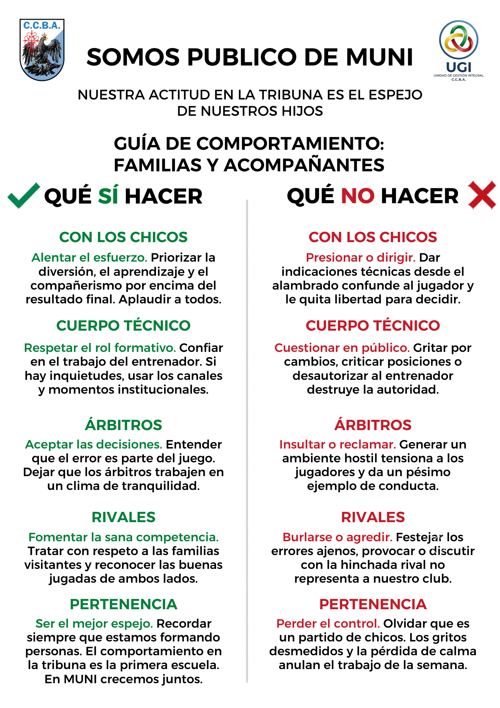

El deporte de mis hijos
El Rol de la Familia en el Deporte Formativo
Para los niños, el deporte debe ser seguro y estructurado. Los adultos somos modelos de conducta; una crítica pesa más que mil elogios.

Qué SÍ hacer
- Brindar sostén emocional (abrazo sincero).
- Alentar a todo el equipo aplaudiendo el esfuerzo.
- Fomentar la autonomía (que preparen su bolso).
Qué NO hacer
- Dar indicaciones técnicas desde la tribuna.
- Presionar por el resultado preguntando "¿ganaron?".
- Criticar a árbitros y profesores.